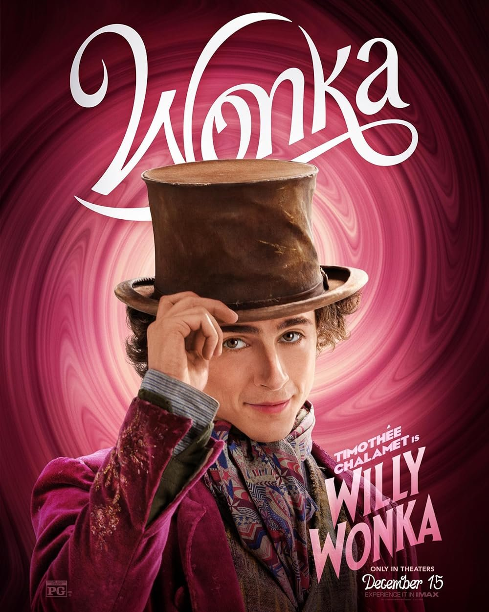
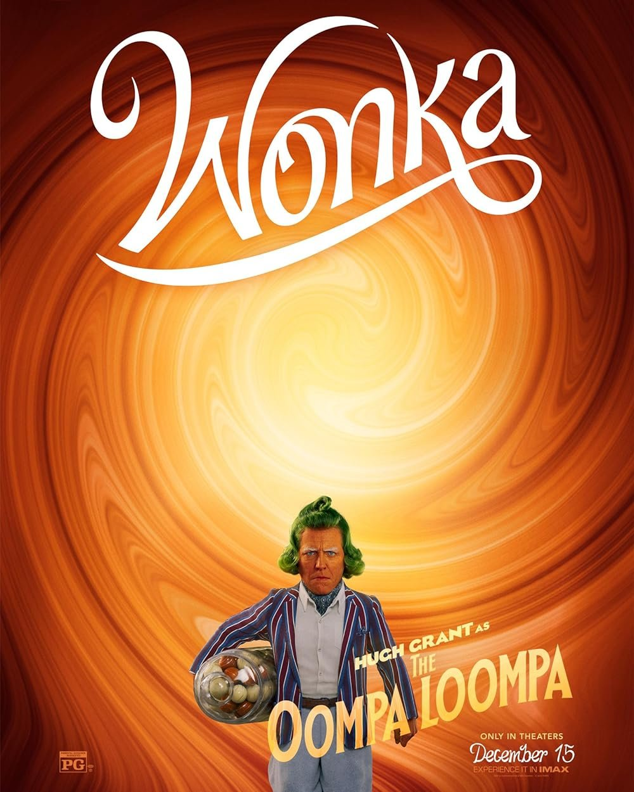
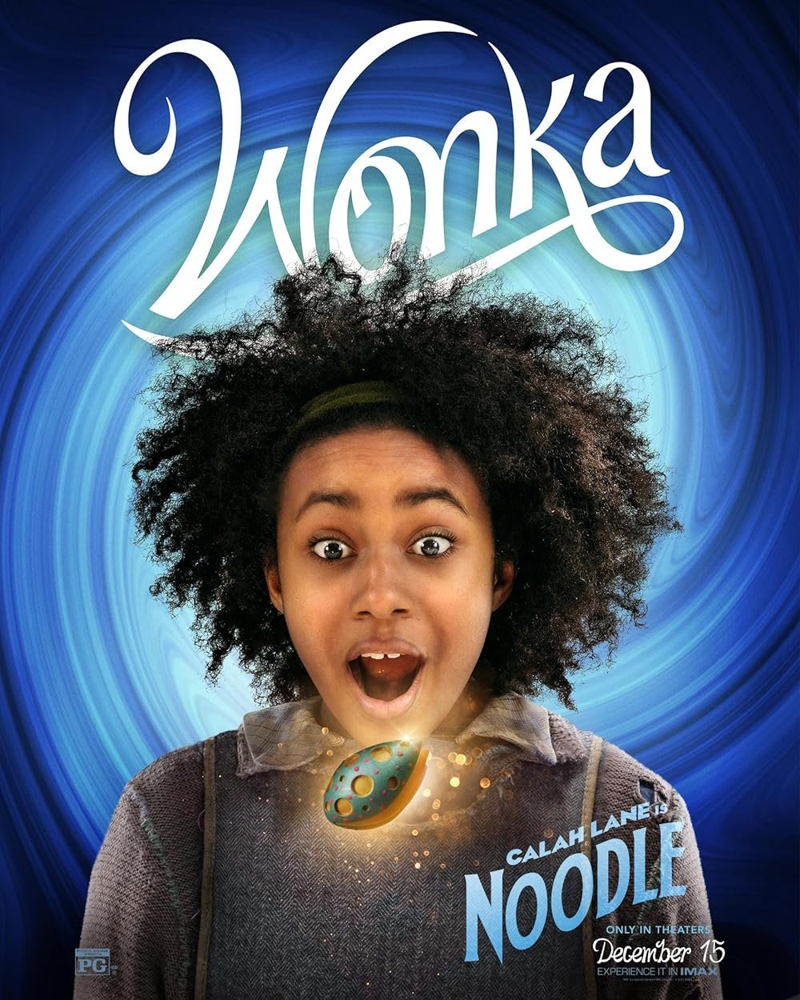
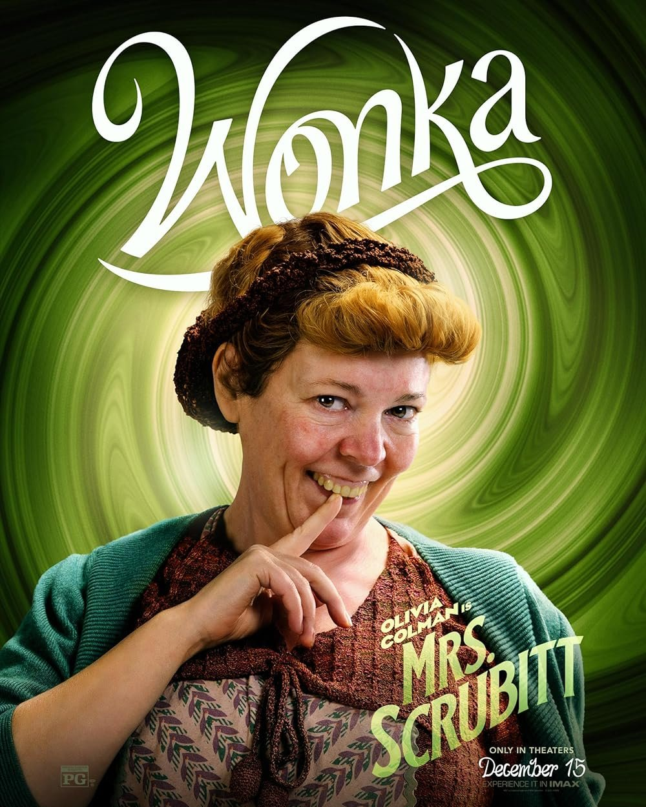
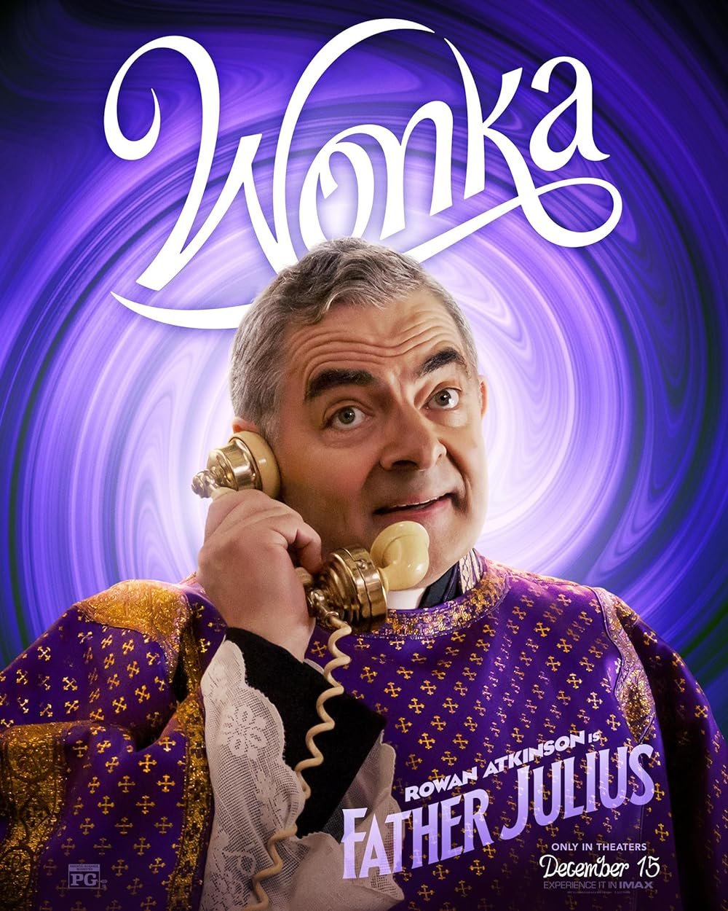
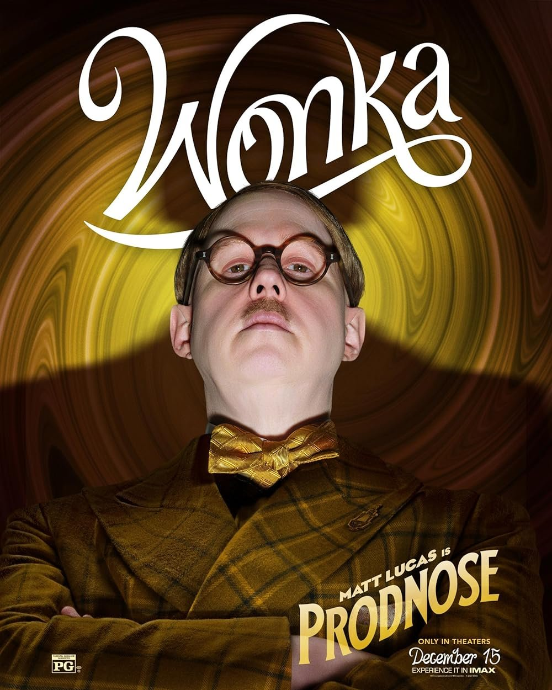
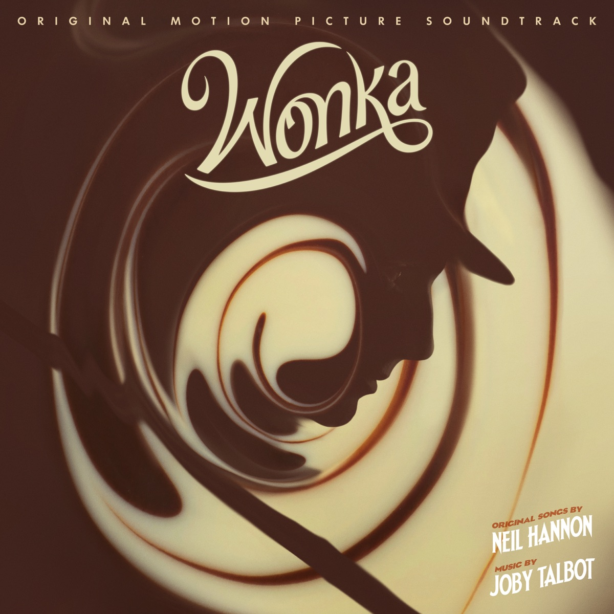

안녕하세요 라보엠입니다.
찰리와 초콜릿 공장(2005)의 프리퀄 영화 웡카(2023)가 개봉해서 가족과 함께 보고 왔습니다. 저는 SK 통신사를 이용하고 있는데, 올해부터 영화 혜택으로 이용할 수 있는 영화관이 롯데시네마에서 CGV 로 변경되었네요. 그래서 가까운 강변 CGV 에서 관람했습니다.
웡카(Wonka) 관람 후기
웡카 시놉시스
세상에서 가장 달콤한 여정
좋은 일은 모두 꿈에서부터 시작된다!
마법사이자 초콜릿 메이커 윌리 웡카의 꿈은 디저트의 성지, 달콤 백화점에 자신만의 초콜릿 가게를 여는 것.
가진 것이라고는 낡은 모자 가득한 꿈과 단돈 12소버린뿐이지만 특별한 마법의 초콜릿으로 사람들을 사로잡을 자신이 있다.
하지만 먹을 것도, 잠잘 곳도, 의지할 사람도 없는 상황 속에서 낡은 여인숙에 머물게 된 웡카는 스크러빗 부인과 블리처의 계략에 빠져 눈더미처럼 불어난 숙박비로 인해 순식간에 빚더미에 오른다. 게다가 밤마다 초콜릿을 훔쳐가는 작은 도둑 움파 룸파의 등장과 달콤 백화점을 독점한 초콜릿 카르텔의 강력한 견제까지. 세계 최고의 초콜릿 메이커가 되는 길은 험난하기만 한데…
웡카 간단 줄거리
로알드 달의 원작 소설을 기반으로 만든 이 영화는 팀버튼의 찰리와 초콜릿 공장(2005)의 프리퀄 영화로, 무일푼의 윌리 웡카가 달콤 백화점이 있는 도시로 찾아와 스크러빗 부인의 덫에 빠지고, 달콤 백화점을 장악한 초콜릿 카르텔 3인방의 방해를 받으면서도 어떻게 자신만의 초콜릿을 사람들에게 알리며 성공했는지의 여정을 담고 있습니다.
로알드 달의 다른 작품에서도 느낄 수 있듯이 희망을 가진 아이들과 약자들이 악독한 부자들과 아이들에게 냉랭한 사회를 어떻게 극복하는지 그려내고 있습니다. 주인공인 윌리 웡카(티모시 샬라메)는 글자도 읽지 못하지만 초콜릿에 대한 엄청난 열정으로, 스크러빗 부인에게 노예처럼 부려지는 약자들과, 특히 아이 누들(칼라 레인)에게 끝까지 희망을 심어주며 초콜릿으로 사회를 장악하고 있는 초콜릿 백화점 사장 삼인방을 무찌르고 자신의 웡카 초콜릿을 사람들에게 나누는데 성공합니다.
웡카 출연진
주인공 티모시 샬라메가 아무것도 없는 상황에서도 희망을 잃지 않고, 자신의 꿈을 향해 달려나가는 주인공 웡카로 출연하여좋은 연기를 보여주었습니다.
  
주황색 소인 움파루파족으로 휴 그랜트가 출연하며 큰 존재감을 보여줬으며, 미스터 빈으로 유명한 로완 앳킨슨이 초콜릿에 중독된 타락한 추기경으로, 더 크라운에서 엘리자베스 2세를 연기했던 올리비아 콜먼, 웡카의 엄마역으로 샐리 호킨스, 웨스트엔드 뮤지컬에서 테나르디에역을 맡기도 했으며 코로나기간동안 방역수칙을 지키자는 코믹한 노래 Thank you baked potato 를 불렀던 맷 루카스 등 로알드 달이 영국인이라 그런지 영국 배우들이 많이 출연했습니다.
  
전작보다 더 뮤지컬 느낌이 강해졌으며, 오리지널 스코어들이 자연스럽게 담겨있습니다. 개인적으로 티모시 샬라메의 연기와 얼굴은 천재적이라고 생각하지만, 노래는 잘 부른다는 생각은 들지 않았습니다. (신께서 공평하게도 그에게 모든것을 주시지는 않...) 주인공이니만큼 노래들은 준수하게 불렀고 뮤지컬 장면들은 잘 만들었습니다. 영화의 오프닝이나 초콜릿 가게를 열며 부르는 노래들이 주요 장면인데, 개인적으로는 기린의 우유(...)를 얻기 위해 동물원으로 가서 누들과 함께 듀엣으로 희망을 노래했던 For a moment 가 가장 좋았습니다.
웡카 OST - For a moment 가사
[Calah Lane]
For a moment
Life doesn't seem quite so bad
For a moment
I kind of forgot to be sad
잠깐이지만
인생이 나쁘지만은 않은 것 같아
잠깐이지만
슬픔을 잊어버린것 같아
He turns night to day
But don't get carried away
Never let down your guard
Let them into your heart for a moment
Not for a moment
그는 밤을 낮으로 바꿔줘
그러나, 휩쓸리면 안돼
절대 방심하지 말자
잠시지만 마음속에만 담아두자
잠시만이라도
[Timothée Chalamet]
Noodle, noodle, apple strudel
Some people don't and some people doodle
Snakes, flamingos, bears, and poodles
Singing this song will improve your moodle
Noodle-dee-dee, noodle-dee-dum
We're having oodles and oodles of fun
누들, 누들, 애플, 스트루들
누군들 안한다고 한들, 누군들 한다고 한들
뱀들, 플라밍고들, 곰들, 푸들
이 노래를 부르면 기분이 좋아져들
누들디디, 누들디덤
우리들 모두들 즐거워들
[Calah Lane (Timothée Chalamet)]
For a moment
(noodle, noodle, apple strudel)
My life has turned upside-down
(some people don't and some people doodle)
잠깐이지만 (누들, 누들, 애플, 스트루들)
내 인생이 바뀌었어 (누군들 안한다고 한들, 누군들 한다고 한들)
For a moment
(snakes, flamingos, bears, and poodles)
I can't keep my feet on the ground
(singing this song will improve your moodle)
잠깐이지만 (뱀들, 플라밍고들, 곰들, 푸들)
내 인생이 바뀌었어 (이 노래를 부르면 기분이 좋아져들)
He's the one good thing
(noodle-dee-dee, noodle-dee-dum)
That's ever happened to me
(we're having oodles and oodles of fun)
그는 단 하나의 존재 (뱀들, 플라밍고들, 곰들, 푸들)
지금 내게 일어난 일 (이 노래를 부르면 기분이 좋아져들)
(int.)
For a moment
Life doesn't seem quite so bad
And for a moment
I kind of forgot to be sad
잠깐이지만
인생이 나쁘지만은 않은 것 같아
잠깐이지만
슬픔을 잊어버린것 같아

어두운 사회 분위기와 아이들에게 희망을 주고자 하는 로알드 달의 철학이 담긴 원작을 왜곡하지 않으면서, 좋은 뮤지컬 컬 OST 와 주인공 티모시 샬라메를 비롯한 많은 배우들의 좋은 연기, 찰리와 초콜릿 공장의 프리퀄로 가족이 함께 보기에 좋은 영화였습니다. 추천드립니다.